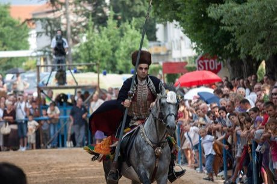

Home / Modern Heritage / Mediterranean
Playable heritage gameRing Tilting
Also known as Sinjska alka · Sinj Alka
A rider at full gallop carries a long lance and tries to pass its tip through a small iron ring hung high on a cord above the track. The ring swings, the pace is fast, and only a steady hand and good timing take the centre.


How to play
- Press and hold: a crosshair marks where the lance tip will be, and it shakes with the pace of the run.
- Release when the crosshair sits inside the swinging ring; the lance needs a moment to arrive, so aim a little ahead of the swing.
- Three runs make a round, and there are three rounds.
Rules at a glance
- Through the centre of the ring scores 3, the upper band 2 and the outer band 1; a miss scores nothing.
- The ring swings from side to side and slightly up and down, so time your release.
- Each run has a single try; your total over all runs decides the stars.
About the tradition
Held every summer in the Dalmatian town of Sinj since the early eighteenth century, the Alka is a riders' contest in which each competitor gallops the length of a street and aims a lance at a small iron ring hung above it. Riders from the surrounding Cetina region keep the contest alive in historic dress.
Origins
Usually placed in the era of Modern Heritage (1800 to today), although its exact origins are uncertain, within the cultural world of Mediterranean.
Credits
- Game design: World Heritage Games (original)
- Photo: L. Carević, CC0, source on Wikimedia Commons
- Text: CC BY-SA 4.0, World Heritage Games.
Sources

Get the app
Ring Tilting is one of 18 sports and skill games in the Sports & Skill of the World app for iPhone, iPad and Android. Submitted to the App Store and Google Play; in review. Store links appear here the day it goes live. One app, many traditions, no account needed.
More games to play

Pinata swing
Mexico +1 · Dexterity and skill gamesPlay preview · in the Sports & Skill of the World app

Nguni stick-fighting rhythm skirmish
South Africa +1 · Dexterity and skill gamesPlay preview · in the Sports & Skill of the World app


Mounted Archery Course
Hungary · Dexterity and skill gamesPlay preview · in the Sports & Skill of the World app
More from Croatia

Dry Stone Wall Builder
Croatia +4 · Crafts and making
Licitar Heart Decorator
Croatia · Crafts and making